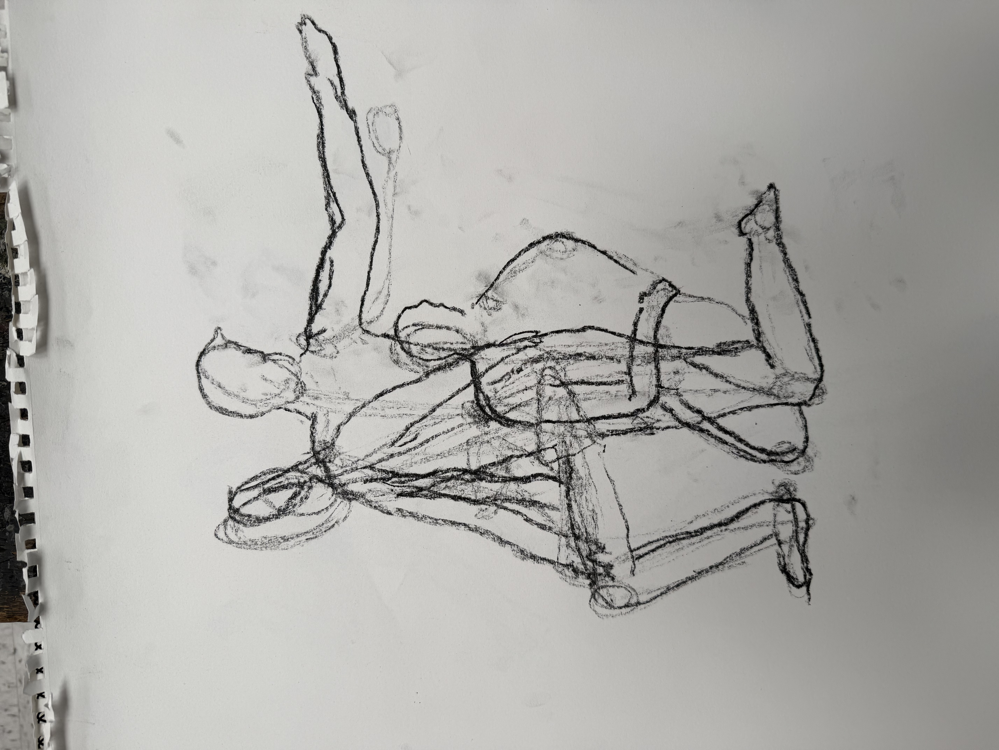

Back
Posterior structure studies
Explore back studies documenting the progression from gesture observation through skeletal framework to muscular anatomy.
Featured Study: Back Anatomical Mapping


Use the buttons above to explore different views
Study Collection

Back Study 01: Gesture Exploration

Back Study 02: Anatomical Gesture

Back Study 03: Structural Analysis

Back Study 04: Proportions

Back Study 05: Muscle Detail